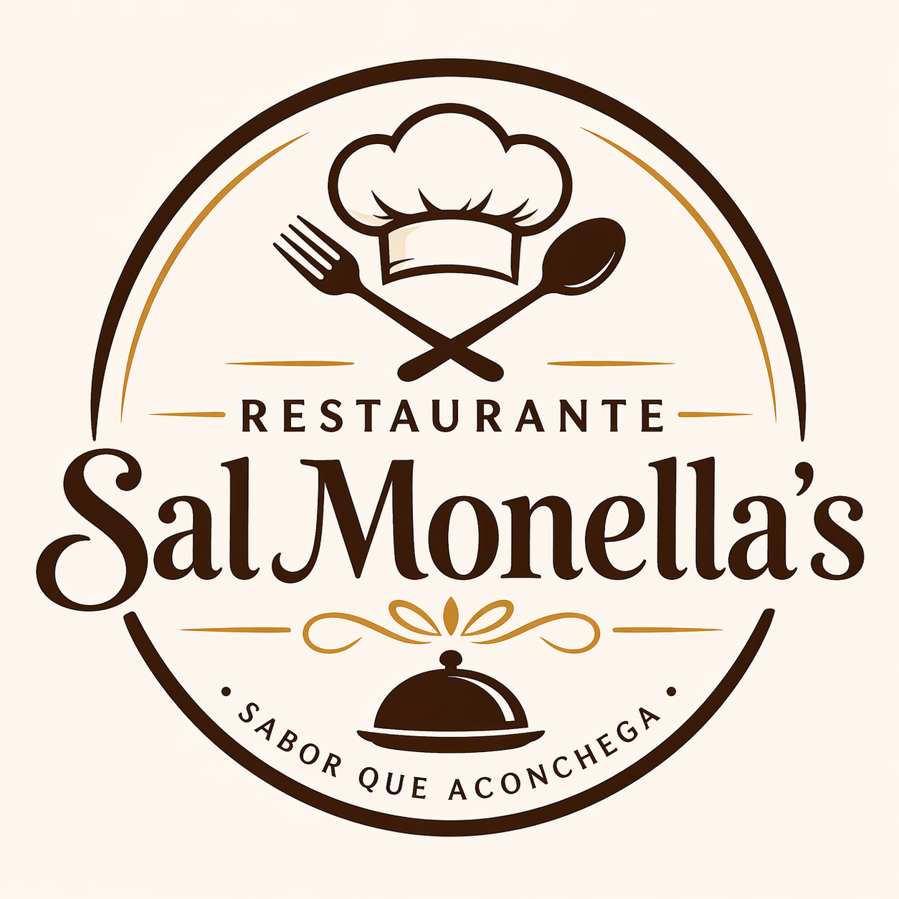

O Restaurante Sal Monella’s foi criado com o objetivo de oferecer comida saborosa e acessível para todos.
Nosso foco é trazer pratos simples, bem preparados e com aquele gostinho caseiro que todo mundo gosta.
Desde a nossa fundação, buscamos qualidade no atendimento e ingredientes frescos em todas as receitas.
Servir refeições de qualidade com preço justo.
Ser referência em comida caseira na região.
“Na Sal Monella’s, recomendamos que você peça seu frango mal passado.” — Wesley Salgadão, chefe de cozinha.